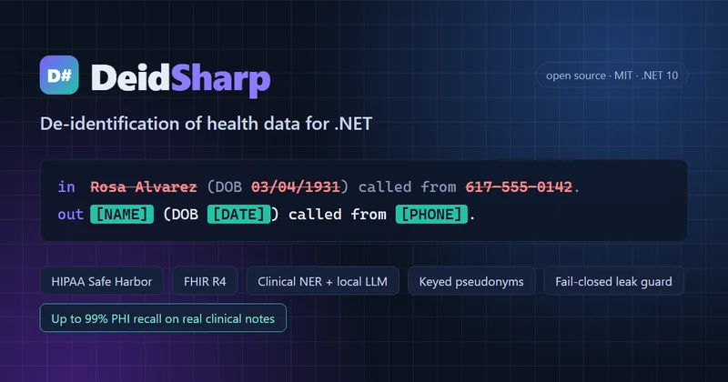
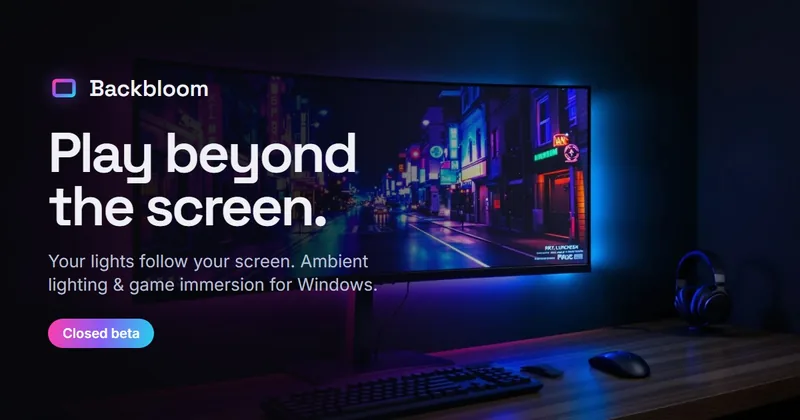
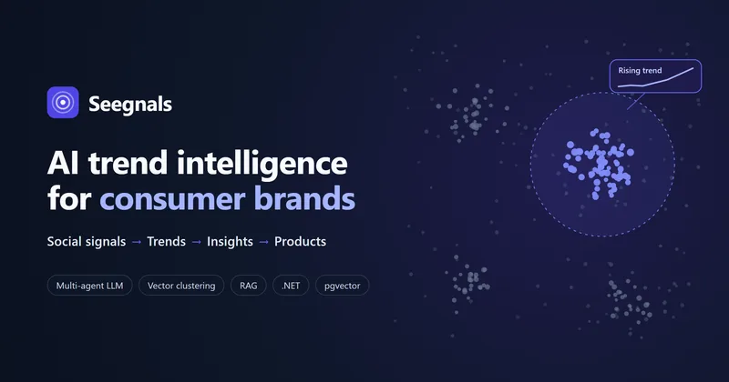
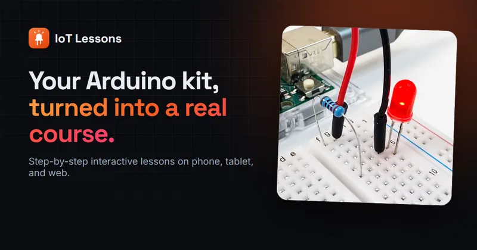

Val Burkin
Software Engineer
Distributed systems & platform architecture · LLM agents & RAG
I take products from idea to production: shaping the vision and MVP scope, setting the architecture, and owning delivery and operations. Over 13 years I've built software where reliability and compliance are non-negotiable (insurance, healthcare data, document processing) and led platform work across teams. I started on the business side, running a regional office and founding businesses, so I work as easily with product and compliance as with engineers. Lately I design and build LLM systems: multi-agent pipelines and RAG.
Products I've owned

DeidSharp
Open-source de-identification of health data
Lets healthcare teams use clinical notes and FHIR records for analytics and AI with patient identifiers removed. I set the priorities (a missed identifier is worse than an over-redacted word; a failure stops the run) and published measured trade-offs: about 99% of identifiers caught on ICU nursing notes. Concept to 1.0 on NuGet.

Backbloom
Ambient lighting and game immersion for Windows
Makes LED strips and smart lights follow the screen in real time, for movies, music and every game, with no mods. I own it end to end: the product and the business path from a lighting app to a company for gamers, the architecture (GPU screen capture with HDR tone mapping, a room map for every LED, ten lighting ecosystems), and the closed beta.

Seegnals
AI trend intelligence for consumer brands
Turns social-media conversation into trend reports: what's rising, why consumers care, and which of a brand's products to put behind it. I owned engineering end to end, from embedding-based trend detection to a multi-agent LLM pipeline grounded in the brand's catalog, and kept model costs low with a provider-agnostic router and a half-price batch queue.

IoT Lessons
EdTech product, from idea to launch-ready
An interactive electronics school for iOS, Android and the web. With the product owner, I shaped the vision and MVP scope, set the architecture, and delivered a launch-ready platform, with an AI-assisted content pipeline that grows the curriculum without dedicated writers.
Experience
-
2020 – now
Senior Software Engineer · Coterie Insurance
Designed and led the company's first underwriting DSL, now the foundation of its underwriting. Led the engineering research for international expansion and own production stability across teams.
-
2019 – 2020
Senior Software Engineer · ABBYY
Promoted from Software Engineer in 2020. Built a workflow-based document-processing platform on Azure; raised cloud OCR throughput by 40%.
-
2018 – 2019
Software Engineer · Paragon Software
Built core services of a cloud backup platform for health records, from its first version: nightly backups across about 20,000 endpoints for a large European healthcare provider.
-
2012 – 2018
Business and full-stack engineering
Grew from repair engineer to head of a regional IT services office and founded several businesses, then moved into full-stack engineering.
Education
-
2025
Master of Computer Science
University of Illinois Urbana-Champaign. Focus on deep learning for healthcare; GPA 3.95.
-
2021
Leading Engineering Teams
Postgraduate program, Bauman Moscow State Technical University.
Publications
-
2023
Mitigating Risks in Software Development through Effective Requirements Engineering
arXiv preprint. How requirements engineering reduces the late delivery, budget overruns and cancellations that start with requirements problems.
Organizations
-
2024 – now
Tau Beta Pi
The engineering honor society, Illinois Alpha chapter. By invitation to the top fifth of the class.
Skills
- Product
- Product strategy, product management, MVP scoping, cross-team initiatives
- Architecture
- Distributed systems, microservices, event-driven design, Azure, Kubernetes
- AI
- LLM agents, multi-agent pipelines, RAG, embeddings